Citrix Provisioning - Create Devices
Navigation
This article applies to all 7.x versions of Citrix Provisioning, including 2411, 2402 LTSR, and 2203 LTSR.
- Change Log
- Target Device Template - vSphere
- Target Device Template - Hyper-V
- Citrix Virtual Desktops Setup Wizard
- Target Device Power Operation
- Update BDM Partition
- Citrix Studio Machine Catalog of Citrix Provisioning Machines
- Write Cache Disk
:idea: = Recently Updated
Change Log
- 2023 Dec 23 - Update BDM Partition - BDM Update can specify Boot Servers.
- 2023 Dec 23 - Converting BIOS vDisks to UEFI at Citrix Docs.
- 2023 Sept 17 - Citrix Virtual Desktops Setup Wizard - updated screenshots for new features in PVS 2308
- 2019 Jun 23 - Citrix Studio Catalog of Citrix Provisioning Machines - new Export Devices wizard in Provisioning 1906
- 2018 Nov 7 - XenDesktop Setup Wizard - added link to Ray Reyes Automate PVS Target Device and VM Creation
- 2018 Sep 3 - replaced Provisioning Services with Citrix Provisioning
- 2018 Apr 1 - in XenDesktop Setup Wizard section, added links to Start-PvsProvisionXdMachines at What's New in Provisioning Services 7.17 at Citrix Docs, and Chris Twiest Create new Citrix Provisioning target devices, including VMware VM’s, DHCP reservation and AD accounts from a CSV file with PowerShell
Target Device Template - vSphere
The hardware of the additional target devices must match the original virtual machine so that the drivers contained in the vDisk continue to function. The easiest way to preserve the hardware configuration is to clone the original virtual machine.
- Shut down the original virtual machine.
- Edit the Settings of the virtual machine and make sure there is a blank, formatted cache disk.
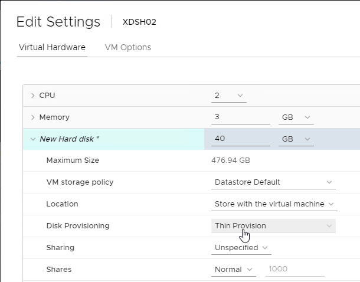
- Citrix Provisioning 2311 and newer only support UEFI. See Converting BIOS vDisks to UEFI at Citrix Docs.
- In the vSphere Client, right-click the original virtual machine, expand Clone, and click Clone to Template. The new machine must be a Template and not a regular virtual machine.
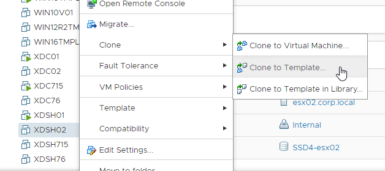
- In the Select a name and folder page, enter a name for the template, and click Next.
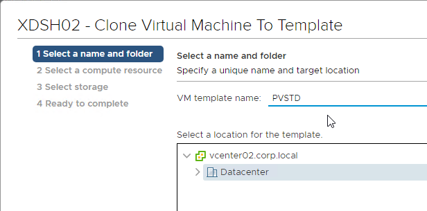
- In the Select a compute resource page, select the cluster and click Next.
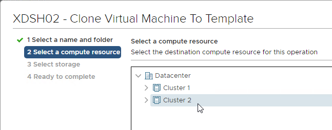
- In the Select storage page, select a datastore for the template and click Next. Note: if you use the Citrix Provisioning wizards to create Target Devices, the new machines will be created on the same datastore as this template.
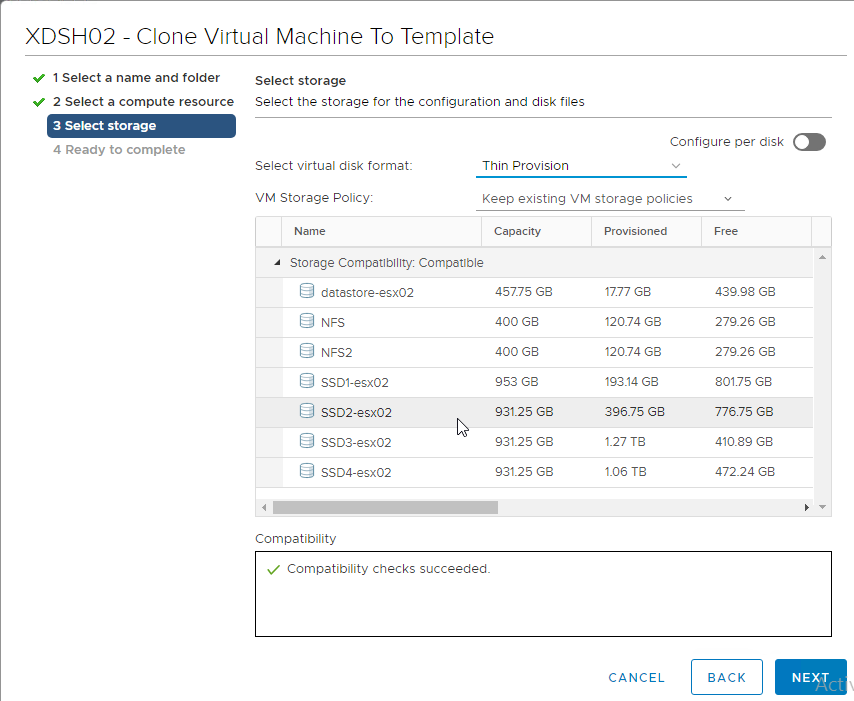
- In the Ready to complete page, click Finish.
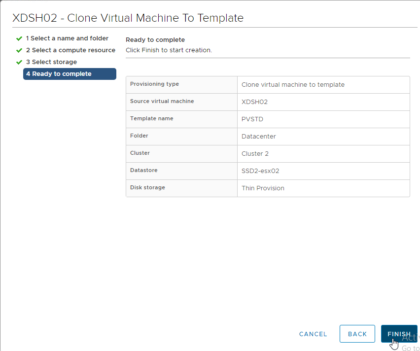
Target Device Template - Hyper-V
If you store the template in the library then you might see the issue described in CTX128750 Hyper-V Synthetic Network Interface Card Reinitializes on New Target Devices. The article recommends cloning a real VM instead of a template VM but this might not work for Citrix Provisioning Citrix Virtual Desktops Setup Wizard.
- Edit the Properties of the original virtual machine and make sure there is a blank, formatted cache disk.
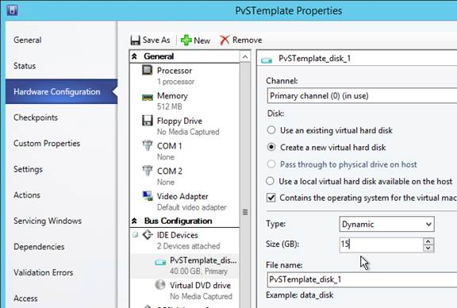
- Right-click the original virtual machine, expand Create and click Create VM Template.
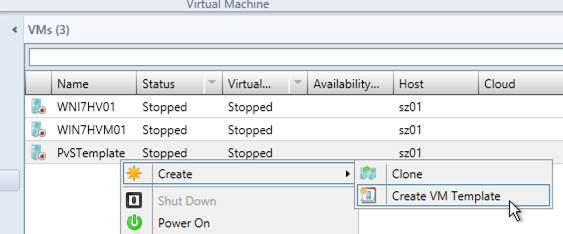
- Click Yes to acknowledge that the source virtual machine will be destroyed.
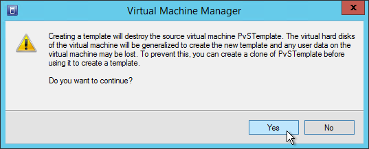
- In the VM Template Identity page, give the template a name and click Next.
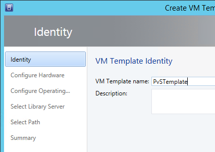
- In the Configure Hardware page, click Next.
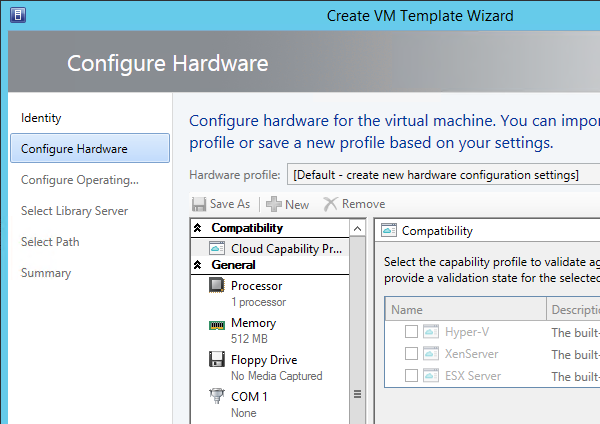
- In the Configure Operating System page, select None – customization not required, and click Next. There is no need to run SysPrep.
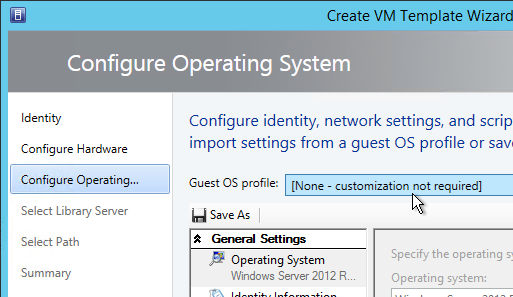
- In the Select Library Server page, select a library server, and click Next.
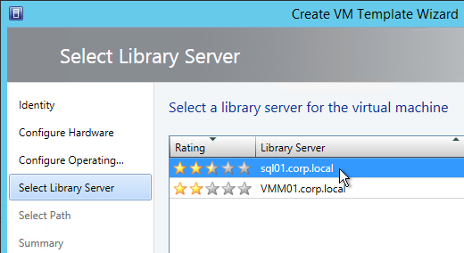
- In the Select Path page, click Browse to select a share, and click Next.
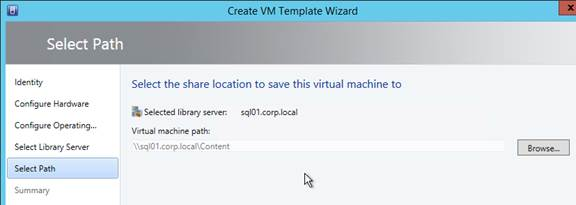
- In the Summary page, click Create.
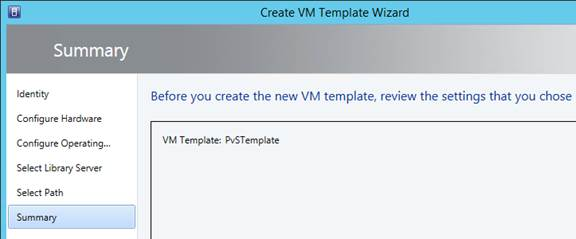
Citrix Virtual Desktops Setup Wizard
The easiest way to create a bunch of Target Devices is to use the Citrix Virtual Desktops Setup Wizard that is built into the Citrix Provisioning Console. This wizard used to be named XenDesktop Setup Wizard.
If you prefer to script much of this wizard, see:
- Start-PvsProvisionXdMachines at APIs at Citrix Docs.
- Chris Twiest Create new Citrix Provisioning target devices, including VMware VM’s, DHCP reservation and AD accounts from a CSV file with PowerShell
- Ray Reyes Automate PVS Target Device and VM Creation
Do the following to launch the Citrix Virtual Desktops Setup Wizard:
- The Citrix Virtual Desktops Setup Wizard uses the Hosting Resources defined in Citrix Studio, so configure Citrix Studio > Configuration > Hosting with destination datastores and networks for the new Target Devices. For maximum control over datastore placement, create a separate Hosting Resource per datastore.
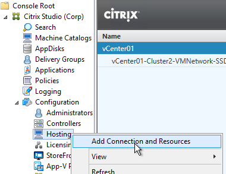
- Make sure the Template Target Device is on the same datastore that you want the new Target Devices to be stored on.
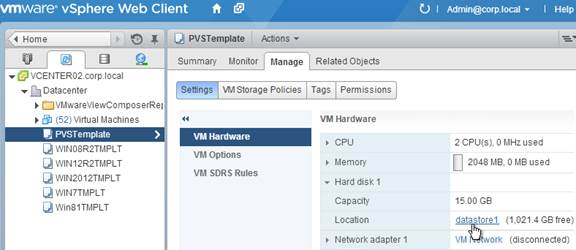
- If Hyper-V, make sure the VMM Console is installed on the same machine as the Citrix Provisioning Console.
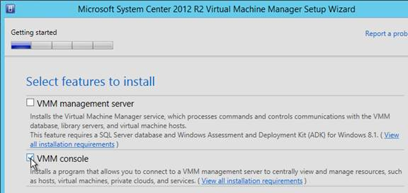
- In the Citrix Provisioning Console, right-click the site, and click Citrix Virtual Desktops Setup Wizard.
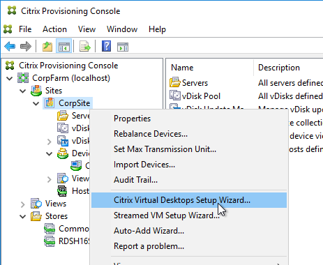
- In the Welcome to Citrix Virtual Desktops page, click Next.
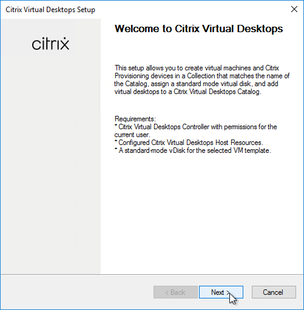
- In the Citrix Virtual Desktops Controller page, choose Customer-Managed Control Plane, enter the name of a Delivery Controller, and click Next.
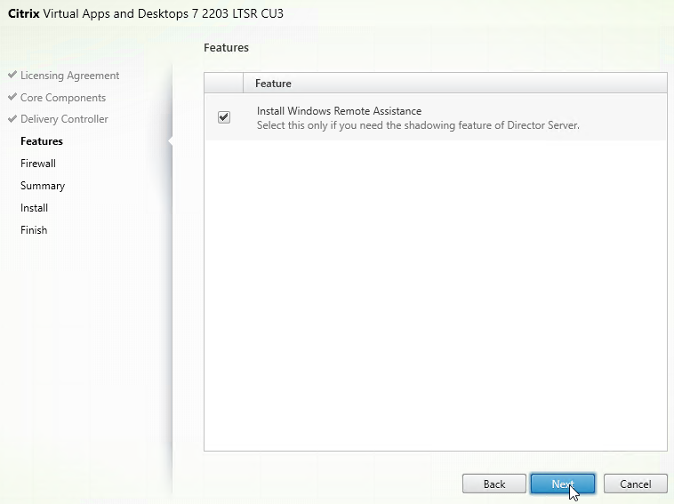
- In the Citrix Virtual Desktops Host Resources page, select a hosting resource. This list comes from the Hosting Resources created inside Studio. Click Next.
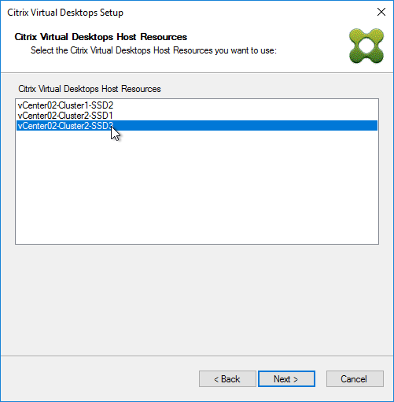
- Use a service account to login to vCenter or SCVMM when prompted. Citrix Provisioning might use these credentials later to power manage the target devices.
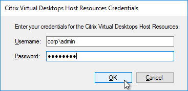
- If you see a message about no available templates, then you need to move your virtual machine template to this datastore.
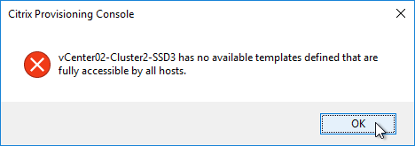
- In the Template page, select the Target Device template, and click Next.
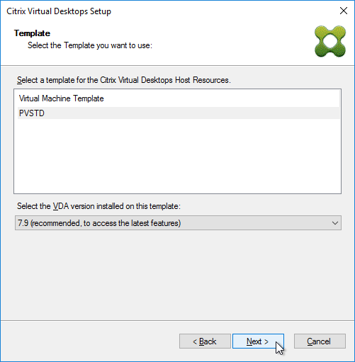
- In the Citrix Virtual Desktops Host Resources Network page, select a network and click Next.
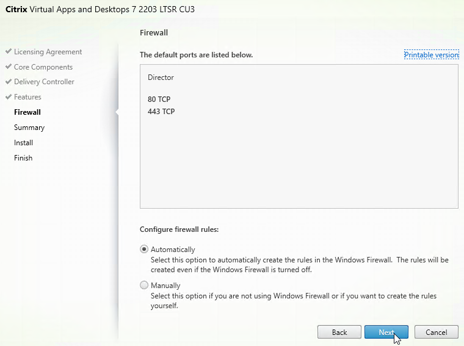
- In the vDisk page, select the Standard Image vDisk and click Next.
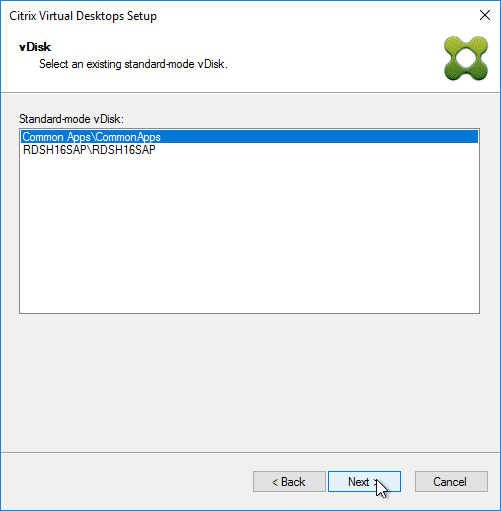
- In the Catalog page, enter a name for a new catalog, and click Next. Or you can add machines to an existing catalog.
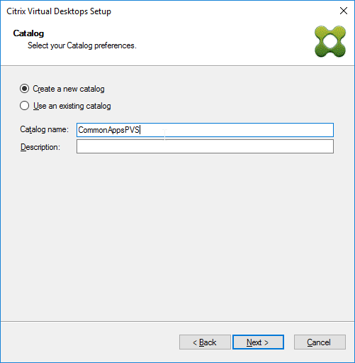
- In the Operating System page, make your selection, and click Next.
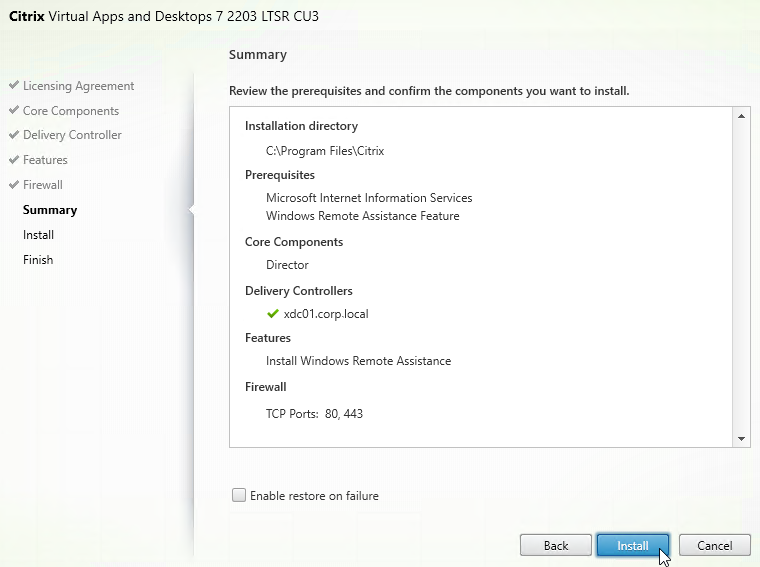
- If you selected Single-session OS, then in the User Experience page, select random or static, and click Next.
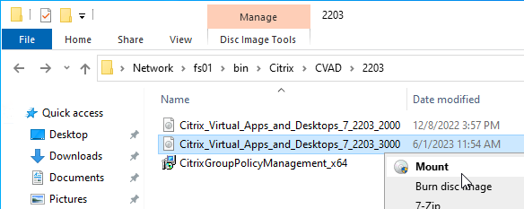
-
In the Virtual machines page:
- Enter the number of machines you want to create.
- Enter the number of vCPUs for each new virtual machine. For RDSH, you usually add between 4 and 8 vCPUs.
-
Enter the amount of Memory for each new virtual machine.
-
To accommodate the Citrix Provisioning vDisk memory cache, add 256 MB (virtual desktop) or 4 GB of RAM (Remote Desktop Session Host) to the Memory. See Citrix Blog Post Size Matters: PVS RAM Cache Overflow Sizing for more information.
- Specify the size of the cache disk: 20-40 GB for session hosts, or 5-10 GB for virtual desktops.
-
Any disks attached to the template will be ignored/discarded. To keep the disk in the template, see CTX237313 PVS XDSW retain template disks.
- Select BDM disk or PXE boot.
-
For PXE boot, the Target Devices must be on the same VLAN as the Provisioning servers.
- BDM disk burns the boot image into the new virtual machine's disk. BDM Disk supports target devices on a different subnet than the Provisioning servers. Make sure the Target Device VM template does not have any Boot ISOs configured.
- Click Next.
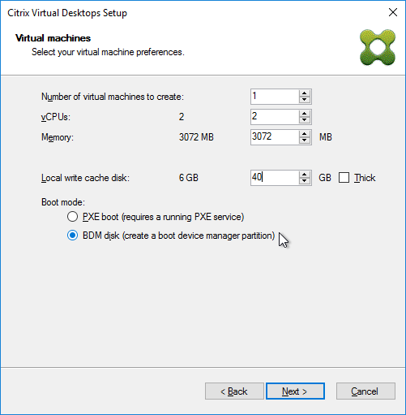
- In the Active Directory page, PVS 2308 and newer let you create computer accounts in untrusted domains. Click Next.
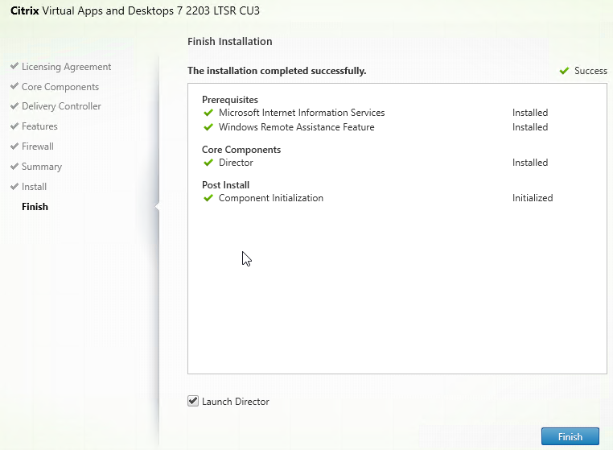
- In the Active Directory accounts and location page
-
-
Select an OU.
- Enter a naming pattern for the new machines. Use ## to represent numbering.
- Select a Starting Index.
- Click Next.
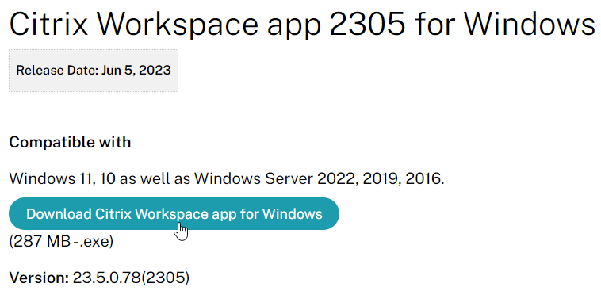
- In the Citrix Provisioning server information page, PVS 2308 and newer let you enter boot addresses that work for UEFI targets. Choose or enter your boot PVS servers and click Next.

- In the Summary page, click Finish to start creating the machines. The wizard will power on the machines so it can format the cache disk.

- Then click Done. PVS 2407 and newer have a button to View Logs.
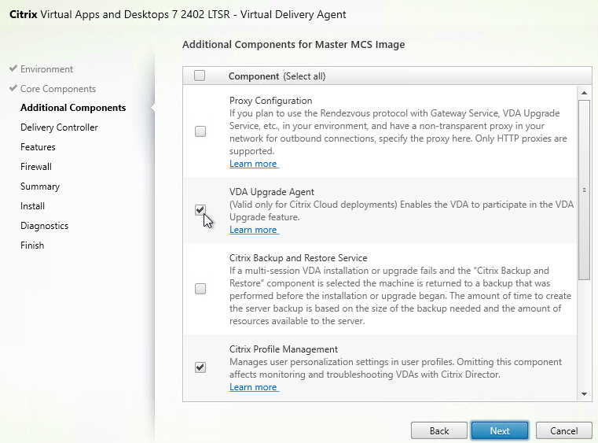
- In Citrix Provisioning Console, if you go to Farm > Sites > mySite > Hosts, you'll see the Hosting Resource used by the Wizard. If you open the Properties of the Hosting Resource...
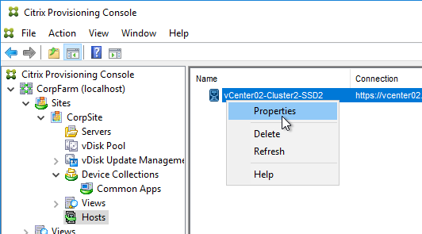
- On the Credentials tab, you can see the credentials you used when running the wizard. You will probably want to change these to a service account.
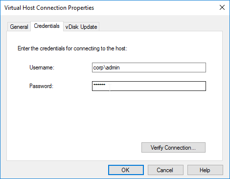
- In Citrix Studio, you’ll see a new machine catalog.
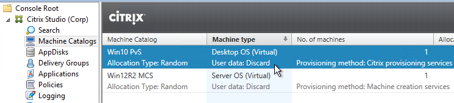
- The Citrix Provisioning Citrix Virtual Desktops Setup Wizard seems to ignore zones, so you'll have to move it to the correct zone manually.
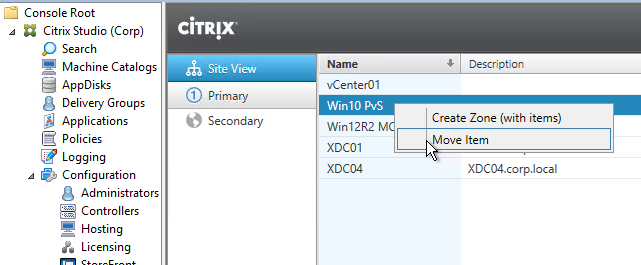
- Create a new Delivery Group or add the machines to an existing Delivery Group.
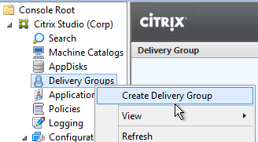
Target Device Power Operation
If you used the Citrix Virtual Desktops Setup Wizard to create Target Devices, then the Target Devices are linked to a hosting connection and can be powered on from the Citrix Provisioning Console by right clicking the device and clicking Boot.
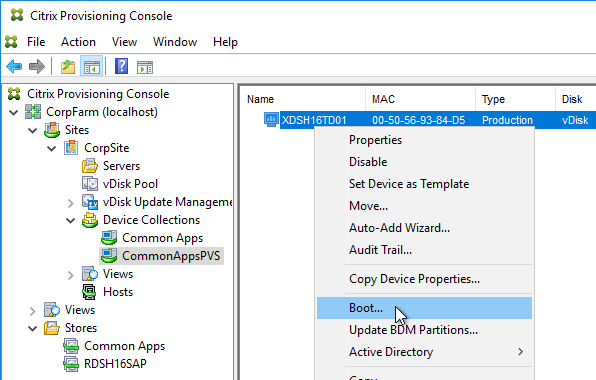
Target Devices created by the Citrix Virtual Desktops Setup Wizard have a VirtualHostingPoolId, which corresponds to the hosting connection listed under Sites > MySite > Hosts. When powering on the VM, Citrix Provisioning searches for a VM with the same name as the Target Device.
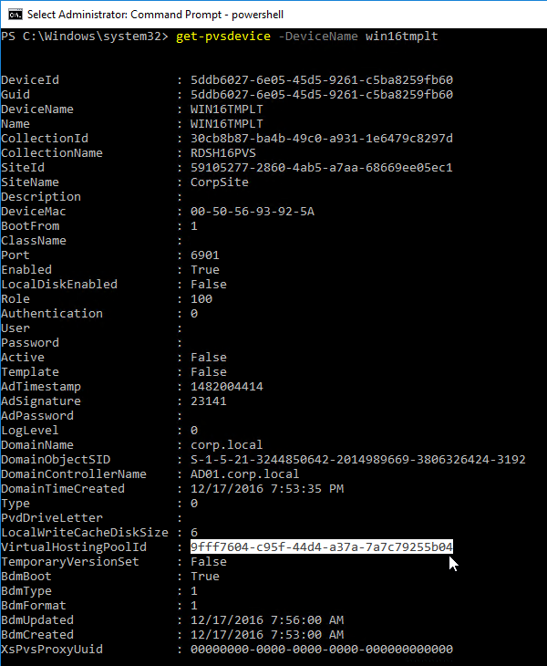
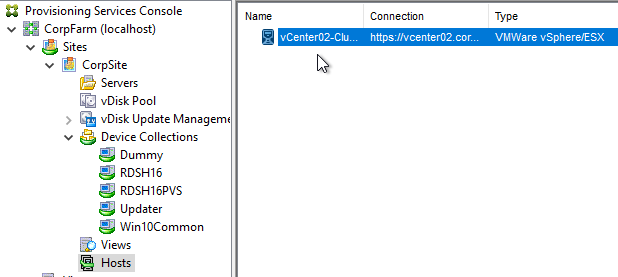
Boot Disk Manager (BDM) Partition Update
During Citrix Provisioning Citrix Virtual Desktops Setup Wizard, you can configure the Target Devices to use a BDM Partition to boot from Citrix Provisioning servers. This partition contains the IP addresses of the Citrix Provisioning servers. Prior to Citrix Provisioning 7.9, it was not possible to change the BDM Partition configuration.
In Citrix Provisioning 7.9 and newer, it is now possible to update the BDM Partition with the latest bootstrap info:
- In Citrix Provisioning Console, go to MyFarm > Sites > MySite > Servers, right-click each Citrix Provisioning server, and click Configure Bootstrap. Update the list of Citrix Provisioning servers.
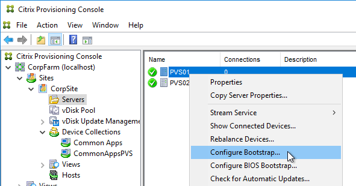
- Make sure the Target Devices are powered off.
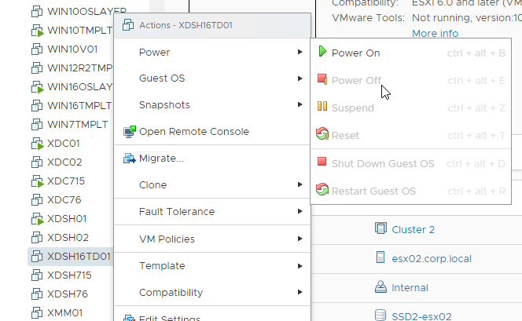
- Go to MyFarm > Sites > MySite > Device Collections, right-click a collection created by the Citrix Virtual Desktops Setup Wizard, expand Target Device, and click Update BDM Partitions.
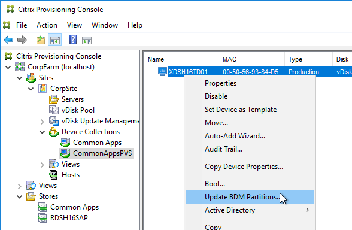
- Citrix Provisioning 2311 and newer let you specify the Boot Servers.
- Click Update Devices.

- Click Close when done.
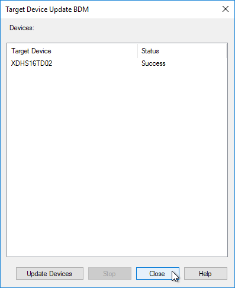
Citrix Studio Catalog of Citrix Provisioning Machines
The easiest method to create Citrix Provisioning Target Device machines (i.e. VDAs) and add them to a Machine Catalog is to run the Citrix Virtual Desktops Setup Wizard.
If you're not able to use the Citrix Virtual Desktops Setup Wizard for any reason, then you can manually create Citrix Provisioning Target Device machines or use the Streamed VM Setup Wizard. Once the machines are created in the Citrix Provisioning Console, you need to Export them to a Delivery Controller.
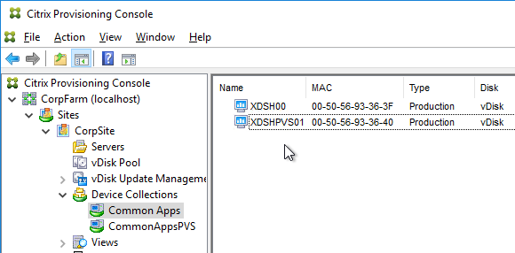
In Citrix Provisioning 1906 and newer, to add Target Devices to a Machine Catalog, Citrix recommends that you use the new Export Devices Wizard because it works with both on-premises CVAD and Citrix Cloud. Find the wizard by right-clicking the Site name. See Export Devices Wizard at Citrix Docs. The Export Wizard is very similar to the Citrix Virtual Desktops Setup Wizard.
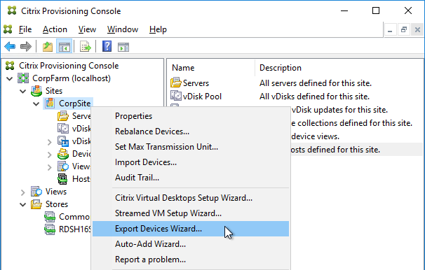
For Citrix Provisioning 1903 and older, do the following:
- In Citrix Studio, create a new Catalog.
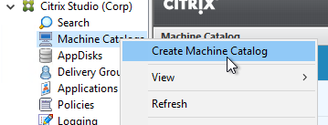
- On the Introduction page, click Next.
- In the Operating System page, make a selection that matches the vDisk, and click Next.
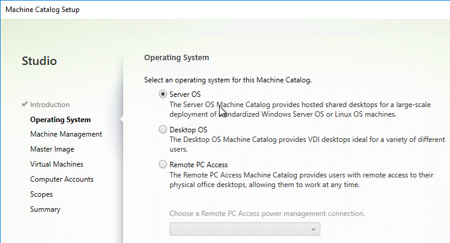
- In the Machine Management page, change the Deploy machines using selection to Citrix Provisioning, and click Next.
- In the Device Collection page, enter the Provisioning server name, and click Connect.
- Select the Citrix Provisioning Device Collection, and click Next.
- In the Devices page, review the list of machines that will be added to the catalog, and click Next.
- In the Summary page, give the Catalog a name, and click Finish. You can now add these machines to a Delivery Group.
- You can later add more machines to the Device Collection in the Citrix Provisioning Console.
- To add the new machines to Citrix Studio, right-click the existing Catalog, and click Add Machines.
- In the Device Collection page, click Connect.
- Select the Device Collection containing new machines and click Next.
- In the Devices page, review the list of new machines, and click Next.
- In the Summary page, click Finish. You can now add these new machines to a Delivery Group.
Write Cache Disk
Write Cache Drive Letter
If the Write Cache disk is not mounting with the correct drive letter, see CTX133476 Explaining and Troubleshooting WriteCache Disk Drive Letter Assignment
Write Cache File Name
Citrix Provisioning has had three different cache names:
- .vdiskCache is Legacy Ardence format (5 .x and before not supported anymore, you can delete this if your target software is running latest, this cache was optimized for size)
- .vdiskdif.vhd is legacy hard drive cache (6.0 and above local hard drive cache, used standard 1mb sector size and is larger than the legacy cache but worked better with storage and was incrementally faster than Legacy Ardence format)
- vdiskdiff.vhdx is Ram cache with overflow (7.1.4 and above RAM cache with overflow, 2 mb sectors larger than vhd but much faster and more compatible with storage)
Write Cache Filling Up Cache Disk
The vdisk cache is basically a difference disk and only contains the blocks that are written to the system drive so you cannot mount it or read the file, it is just block data. Use a tool like Process Monitor from Microsoft (used to be sysinternals) and monitor the system drive. Any write to the system drive is redirected by the Citrix Provisioning software to the cache file. Make sure that any software that is installed on the target image does not have an auto update feature enabled, redirect all user data to a network share and educate your users to make sure they are not doing something that will fill up the cache like downloading a video to the local system drive.
Be aware that the RAM cache with overflow to hard drive can use more space on your local drive, it is important even in the older cache that you perform regular maintenance on your vdisks some recommendations:
- Merge to a new base disk when you have created 5 or more versions
- After every merge to the base disk, mount the new base disk and defrag the disk, this is important to reduce sectors used in the local cache, it is very important with the new RAM cache with overflow to local disk but it can have a very positive impact with the legacy local cache. Refer to http://blogs.citrix.com/2015/01/19/size-matters-pvs-ram-cache-overflow-sizing for more information.
Write Cache Size Monitoring
To view the size of Write Cache in RAM with overflow to disk, look in Task Manager for Nonpaged pool.
Citrix Blog Post Digging into PVS with PoolMon and WPA details how to use Windows Performance Analyzer to view Citrix Provisioning RAM cache and overflow.
Related Topics
- Update a vDisk
- Back to Citrix Provisioning